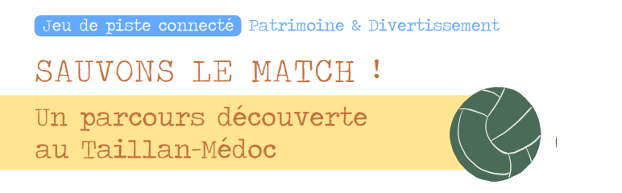
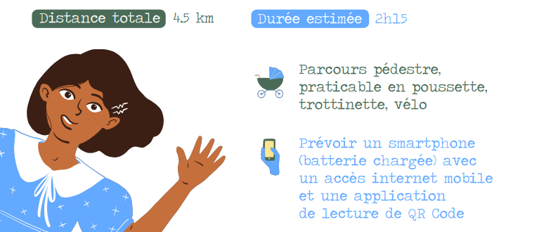
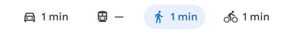
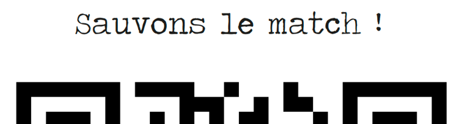

En fouillant dans le grenier, vous avez trouvé un joli album vintage, qui raconte comment Tristan, Marinette et leurs camarades de classe, écoliers d'un temps passé, vont ramener la coupe du Médoc au Taillan, pour la plus grande fierté de leur instituteur !
Mais dès le début de la lecture, votre vue se trouble, vos mains picotent, que se passe t'il ?
Tout à coup vous vous retrouvez face à Tristan et Marinette, complètement paniqués ... l'unique ballon de l'équipe a disparu ! Le match risque d'être annulé !
Trouvez avec nos deux personnages les indices disséminés dans la ville, répondez aux questions et trouvez la formule magique pour revenir à notre époque... si vous le souhaitez!

Principe du jeu :
1- Nous allons vous donner les coordonnées du début du jeu. Rendez-vous sur le lieu indiqué par votre GPS, assurez vous qu’il est bien en itinéraire piéton.

2- Après avoir atteint la destination indiquée, vous devez chercher un QR code « Sauvons le match ! » comme sur l’exemple ci-dessous. Flashez le QR code avec votre téléphone.

Si l'appareil photo de votre smartphone ne permet pas de lire ces petits codes, téléchargez une application gratuite, par exemple "QR Code Lecteur" (sur Google Play) ou QR Code ou Scanner de Code QR sur iOs. Une fois téléchargée, il suffit d'ouvrir l'application pour scanner le code comme pour prendre une photo.
3- Vous rentrez à présent dans l’aventure avec Tristan et Marinette, lisez puis répondez à la question qui fera appel à votre sens de l’observation ou à votre esprit de déduction. Une fois votre réponse choisie, cliquez sur « VERIFIER »
VERIFIER
4- Vous avez trouvé la bonne réponse : Bravo ! Vous recevez une lettre qui permettra de constituer la formule magique à la fin du parcours. La position du prochain QR code est alors accessible en cliquant sur « Etape Suivante », votre GPS prend le relai pour afficher la prochaine étape et tout recommence depuis l’étape 1
5- Si vous n’avez pas trouvé la bonne réponse : pas de soucis, modifiez votre réponse et cliquez sur « Réessayez !!! » Si vous avez trouvé la bonne réponse « Etape suivante » apparait et vous pouvez poursuivre l’aventure, sinon réessayez encore.
Pour toutes vos questions vous pouvez nous écrire un mail :
parcours.atpe@gmail.com
Vous êtes prêts ??? attention, c’est parti